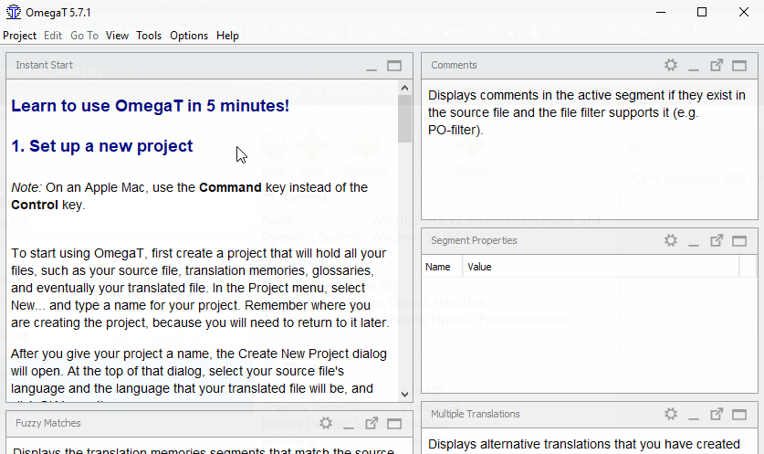
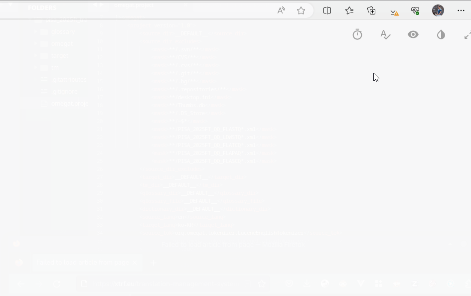
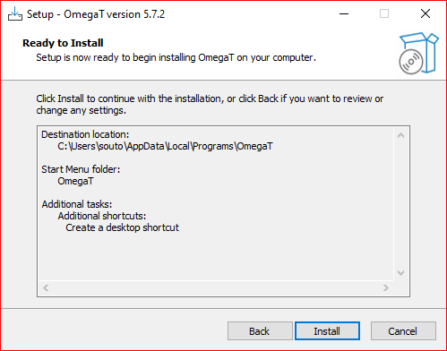
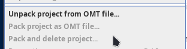
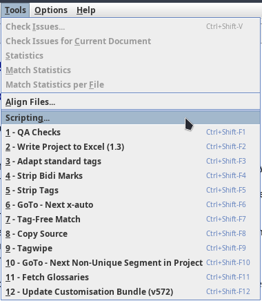

Руководство по установке OmegaT 5.7.2 для Windows¶
Другие операционные системы
Программ OmegaT может быть установлена на другие операционные системы, такие как macOS или Linux. Установка на macOS описана в этом руководстве. Если требуется установка на Linux, свяжитесь с нашей службой поддержки.
Вам следует тщательно выбрать правильный вариант, исходя из своих начальных условий:
- Если у вас уже установлена предыдущая версия OmegaT (например, 5.7.1 или 4.2.0), вам следует сначала обновить конфигурацию программы. Как это сделать, описано в разделе о конфигурации (следующий раздел).
- Если на вашем компьютере ранее никогда не была установлена OmegaT (любой версии), то вы можете пропустить следующий раздел, посвященный конфигурации программы, и перейти непосредственно к разделу об установке. OmegaT будет сконфигурирована автоматически в процессе установки.
Конфигурация¶
Этот раздел предназначен для пользователей, на компьютере которых уже установленна предыдущая версия OmegaT (например, 5.7.1 или 4.2.0). Для обновления конфигурации программы выполните шаги, приведенные ниже.
- Запустите OmegaT и перейдите в меню Tools (Инструменты) > Scripting (Скрипты), чтобы открыть консоль скриптов. В OmegaT 5.7.1 откройте консоль скриптов. Проверьте, есть ли у вас скрипт под названием Update Customisation Bundle (v572):
Предупреждение
Если в названии нет фрагмента «v572», то это не тот скрипт, который нам нужен. В следующем шаге описано, где взять этот скрипт.

Если скрипт Update Customisation Bundle (v572) есть в списке, выберите его щелчком мыши и нажмите кнопку Run (Выполнить) в левом нижнем углу окна для запуска скрипта. Скрипт выполнит обновление файлов конфигурации и завершит работу OmegaT. Далее пропустите следующий шаг и перейдите непосредственно к разделу установки.
Если скрипт отсутствует в списке, вы можете скачать его самостоятельно. В дальнейших шагах описано, как это сделать.
- Нажмите правой кнопкой мыши на кнопку ниже и выберите «Сохранить как», чтобы загрузить скрипт конфигурации (например, на рабочий стол)7
Скачать UpdateConfigBundle.groovy
-
В главном окне OmegaT выполните следующие действия для запуска скаченного скрипта конфигурации:
-
Tools (Инструменты) > Scripting (Скрипты) > File (Файл) > Open script (Открыть скрипт).
- Перейдите на рабочий стол (или в папку, в которой был сохранен скрипт) и выберите файл с расширением groovy.
- Нажмите кнопку Open (Открыть), чтобы открыть файл скрипта, далее нажмите кнопку Run (Выполнить)в левом нижнем углу окна.

Скрипт установит необходимые файлы конфигурации для OmegaT 5.7.2 и удалит старые файлы для предыдущих версий, после чего завершит работу программы.
-
Удалите текущую версию OmegaT.
-
После этого переходите к разделу установки (следующий шаг).
Установка¶
Предупреждение
Для установки OmegaT необходим 64-разрядный компьютер.
- Нажмите на кнопку ниже, чтобы загрузить OmegaT 5.7.2. Это специальная версия, подготовленная компанией cApStAn. Она включает в себя несколько исправлений ошибок и улучшений, недоступных в других версиях.
Проблемы с загрузкой?
В некоторых браузерах (например, в Microsoft Edge) может появиться диалоговое окно с вопросом о безопасности загрузки установочного файла. Файл безопасен. Чтобы разрешить загрузку файла в браузере, вы можете выполнить действия, показанные в следующем видео.

-
После завершения загрузки дважды щелкните установочный файл, чтобы запустить мастер установки.
-
Windows Defender (Центр защиты Windows) может показать предупреждение о риске запуска неизвестного приложения.

При появлении такого диалогового окна щелкните ссылку More info (Подробнее). В появившемся окне вы должны увидеть информацию о том, что издателем этой программы установки является cApStAn.

Если это действительно так, нажмите кнопку Run anyway (Выполнить в любом случае) для продолжения установки.
- В следующем диалоговом окне можно выбрать язык установки. Далее нажмите OK:

- Чтобы продолжить установку, примите лицензионное лицензионное соглашение GPL и нажмите Next (Далее):

- В процессе установки будет предложено установить программу OmegaT в папку
C:\Users\USER\AppData\Local\Programs\OmegaT. Такой выбор пути установки позволяет установить программу пользователям без административных прав.
Предупреждение
Не изменяйте путь установки, если вы не являетесь ИТ-специалистом и не знаете, что делаете.

- На рабочем столе будет создан ярлык, благодаря которому впоследствии можно запускать OmegaT двойным щелчком. Оставьте эту опцию включенной.

- Вы можете изменить название папки OmegaT в меню «Пуск», но предложенное название «OmegaT» вполне подходить, при стандартной установке его менять не нужно.

- Теперь вы можете приступить к установке. Нажмите кнопку Next (Далее).

- Установка должна завершиться через несколько минут.

- В следующем разделе вы узнаете, как после установки выполнить несколько проверок, чтобы убедиться, что все в порядке.
Все готово. Можно приступать к использованию OmegaT 5.7.2.
Проверка надлежащей установки¶
Описанные выше действия, как правило, приводят к успешной установке и запуску OmegaT, но на всякий случай бывает полезно проверить, все ли в порядке. Проверить можно следующее:
- Версия OmegaT
Чтобы подтвердить, что у вас действительно установлена правильная версия, вы можете проверить информацию в меню Help (Справка) > About (О программе) > Copy Support Info (Копировать информацию для поддержки). Вы должны увидеть:
> Version: OmegaT-5.7.2_0_a978d82ee
> Platform: [ваша операционная система]
> Java: 11.0.19 amd64
- Версия пользовательской конфигурации
Чтобы убедиться в том, что ваша пользовательская конфигурация актуальна, можно выбрать пункт меню Options (Параметры) > Access Configuration Folder (Открыть папку настроек) и найти в открывшейся папке файл под названием local_version_notes.txt.
Если вы откроете этот файл, строка в начале файла, показывающая самое последнее обновление, должна совпадать с той, которую можно увидеть на странице https://cat.capstan.be/OmegaT/v572/.
- Пункты меню распаковки/упаковки OMT
Даже если вы не используете пакеты OMT, у вас должно быть три пункта в меню Project (Проект) в OmegaT:

- Скрипты и сочетания клавиш для запуска скриптов
В меню Tools (Инструменты), под пунктом Scripting (Скрипты), вы должны увидеть перечень из 12 сочетаний клавиш для запуска скриптов.

Примечание
Время от времени перечень и сочетания могут обновляться, и если ваш список не совпадает со снимком экрана, не стоит волноваться.
Кроме того, если вы откроете окно со скриптами, то увидите весь список доступных скриптов в левой части окна.
Your user Name/ID¶
При первом открытии OmegaT обновите свое имя или псевдоним Для этого щелкните выберите Options (Параметры) > Preferences (Настройки) > Team (Командная работа).
В поле «Имя» уже может быть указано ваше имя пользователя. В таком случае имя можно оставить, как есть. В противном случае, если поле пустое или в нем содержится текст, по которому вас невозможно идентифицировать (например, USER), введите свое имя или псевдоним, который идентифицирует вас более или менее однозначно и который мы можем связать с вами.
Если вас просили использовать «VER» в том или ином проекте, а вы работаете только как верификатор, вы можете добавить также свое имя или инициалы (например, VER_msoutopico, VER_manuelи т. д.).
Далее нажмите кнопку OK.